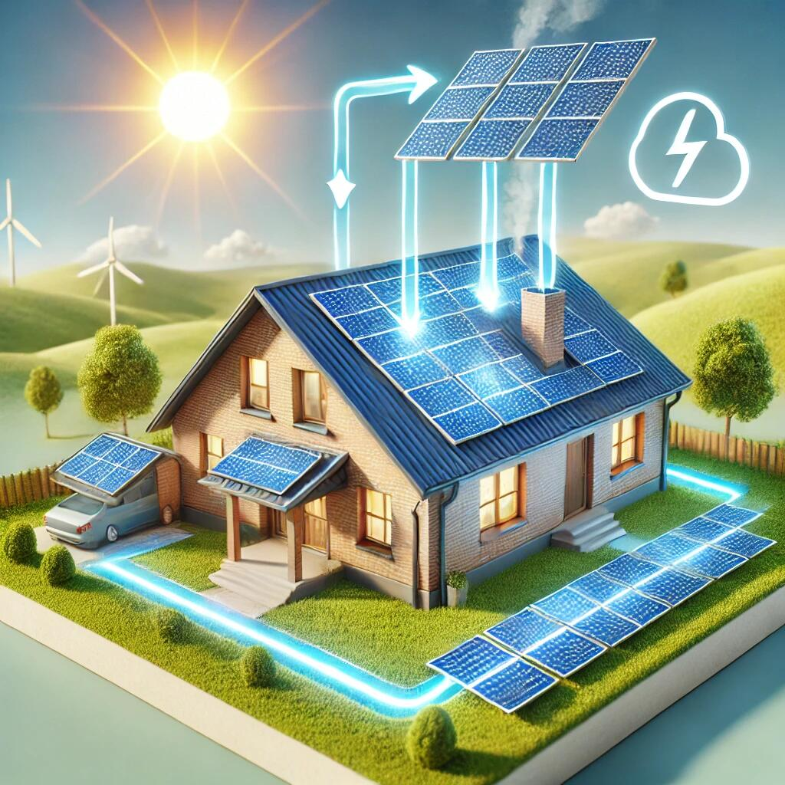

01 / RENEWABLE ENERGY GENERATION
What is renewable power?
Renewable energy is electricity produced from naturally replenishing resources such as sunlight, wind and water. Solar photovoltaic systems convert sunlight directly into electricity, wind turbines convert moving air into electrical power, and hydroelectric systems use flowing water. These resources can be combined with grid interconnection, battery storage and control systems to provide a more flexible energy platform.
For TerraHash, renewable generation is the physical starting point. Large-scale digital infrastructure requires dependable, cost-aware power, so site selection, generation mix, storage, interconnection and load management are all part of the infrastructure strategy.
- Solar PV, wind and other renewable generation
- Battery storage and load balancing
- Grid interconnection and power distribution
- Energy monitoring and flexible load management